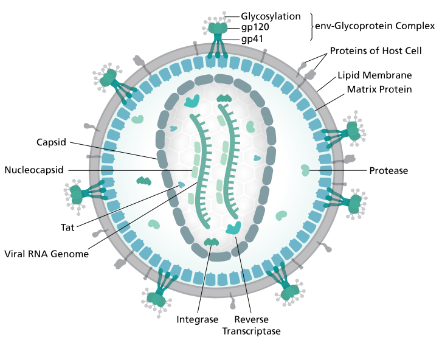

Exploring Macromolecular Structures with UCSF Chimera
Slides:
https://rbvi.github.io/chimera-tutorials/presentations/chimera-intro-embo-2018-rome.html/
John "Scooter" Morris
Center for Protein Research, University of Copenhagen
12-13 November 2018, Copenhagen, Denmark
Caveats (full disclosure)
- I am not a specialist in Cryo-EM or even the Chimera volume tools
- I am very familiar with many features in Chimera...
- ...but I often have to look them up (a skill you will undoubtedly learn)
- There are many, many more features in Chimera than we can cover today...
- ...but I hope to give you enough to get started
- Please ask questions...
- ...I may not be able to answer them today, but I'll try to answer them tomorrow
UCSF Chimera Demo
